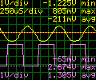
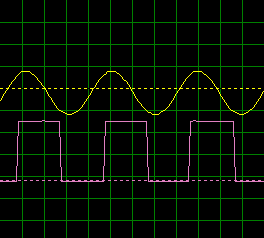

The
qs-scope application running on your Stellaris
EK board supports saving oscilloscope data on either an installed
microSD card or a USB flash stick. Files may be saved either as Windows
bitmap images showing the waveform(s) currently shown on the CSTN
display or as comma-separated-value (CSV) files suitable for import
into a spreadsheet application. The image to the right shows an example
of a bitmap saved from qs-scope with all annotation features enabled.
CSV
files saved contain 512 single channel samples or 256 dual channel
samples. In each case, the trigger event occurs at the center sample -
sample 256 for a single channel file or sample 128 for a dual channel
file.
Saving to microSD card
The
microSD card slot on the EK board can be found beneath the top left
edge of the CSTN display. Hot-plugging the microSD card is not recommended. Install and remove the card only while the EK board is not powered.
To
save a file to the microSD card, select either "CSV on SD" or "BMP on
SD" from the "File" control group in the qs-scope menu. The application
will save the file in the root directory using the next available
filename of the form "scopeXXX.csv" or "scopeXXX.bmp" where XXX is a
three digit decimal number starting from "000". A message will be
displayed on the screen to indicate whether the save operation was
successful or not.
Saving to USB flash stick
To save onto a USB
flash stick, the flash stick must be connected to the EK board "USB
Host" (EK-LM3S3748) or "USB OTG" (EK-LM3S3748) connector and the
qs-scope application must be in USB Host mode. The USB operating mode
is selected from the qs-scope "Setup" menu. Ensure that the USB flash
stick is connected while the USB mode is set to "Device" then switch to
"Host" with the stick already in place. With the current version of the
qs-scope application, a flash stick may not be detected correctly if
inserted while the application is already in USB Host mode. A message
will be shown on the CSTN display when the application detects the USB
flash stick.
To save a file to the USB flash stick, select either "CSV on USB" or "BMP
on USB" from the "File" control group in the qs-scope menu. The
application will save the file in the root directory using the next
available filename of the form "scopeXXX.csv" or "scopeXXX.bmp" where
XXX is a three digit decimal number starting from "000". A message will
be displayed on the screen to indicate whether the save operation was
successful or not.
Checking the disk contents
If
you connect to the EK board using a terminal emulator connected to the
virtual COM port offered by the "Debug USB" channel, the contents of
the installed USB flash stick or microSD card can be examined while the
qs-scope application is running. A command-line control interface is
provided which includes simple implementations of the "cat" and "ls"
commands.
The file system is arranged such that the microSD
card is mounted as drive "0:/" and the USB flash stick as "1:/". To
view the contents of the root directory on the flash stick, therefore,
command "ls 1:/" can be used. If "ls" is entered without any path
parameter, the microSD card (drive 0) root directory is listed.
To
echo the contents of any text file from the file system to the terminal
emulator, the "cat" command can be used. The single parameter provided
is the fully qualified path to the file that is to be echoed, for
example "cat 0:/scope000.csv" will read the first CSV file saved by the
oscilloscope from the root directory of the microSD card.
Saving Files from LMScope
Bitmap
and CSV files may also be saved from the Windows LMScope application.
In this case, the bitmap saved is generated from the waveform data
received from the EK board and does not contain the channel annotation
information. An example is shown to the right.